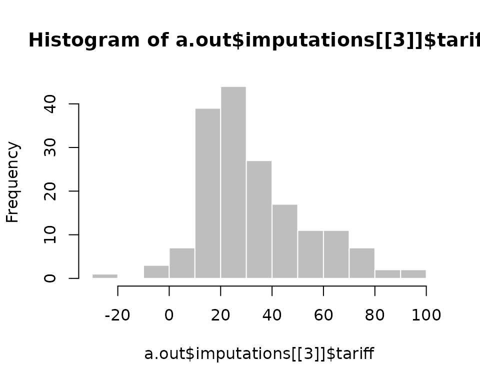
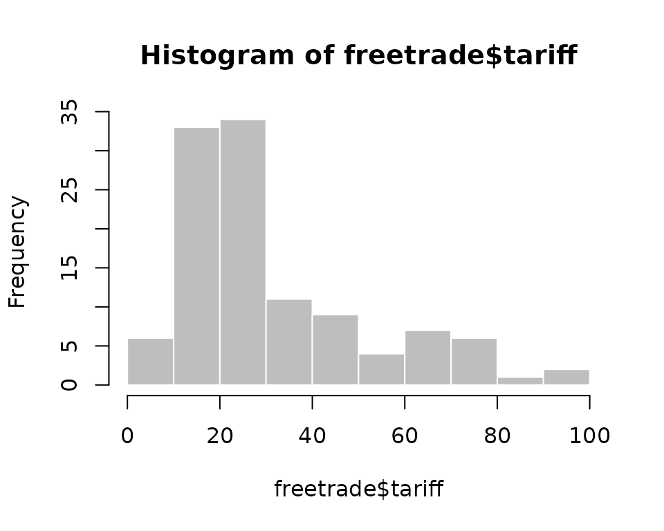
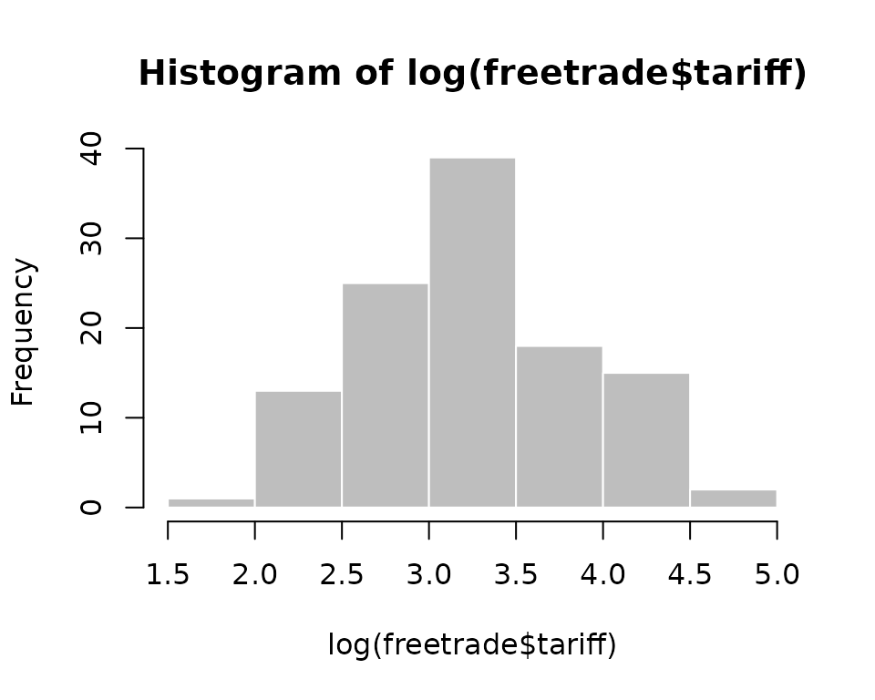
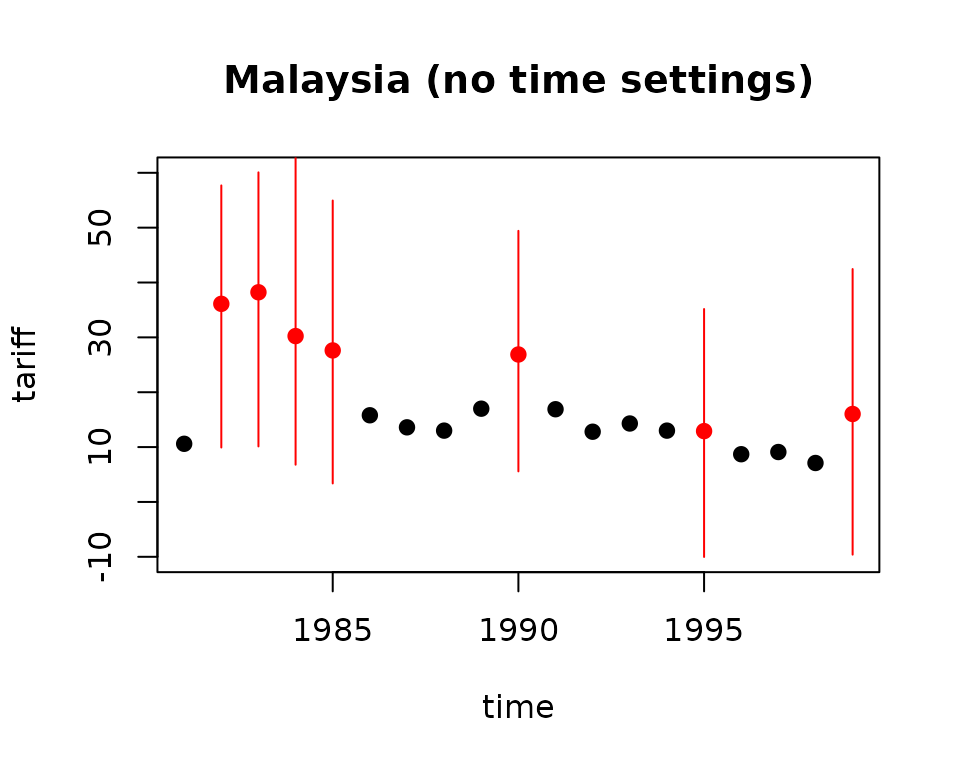
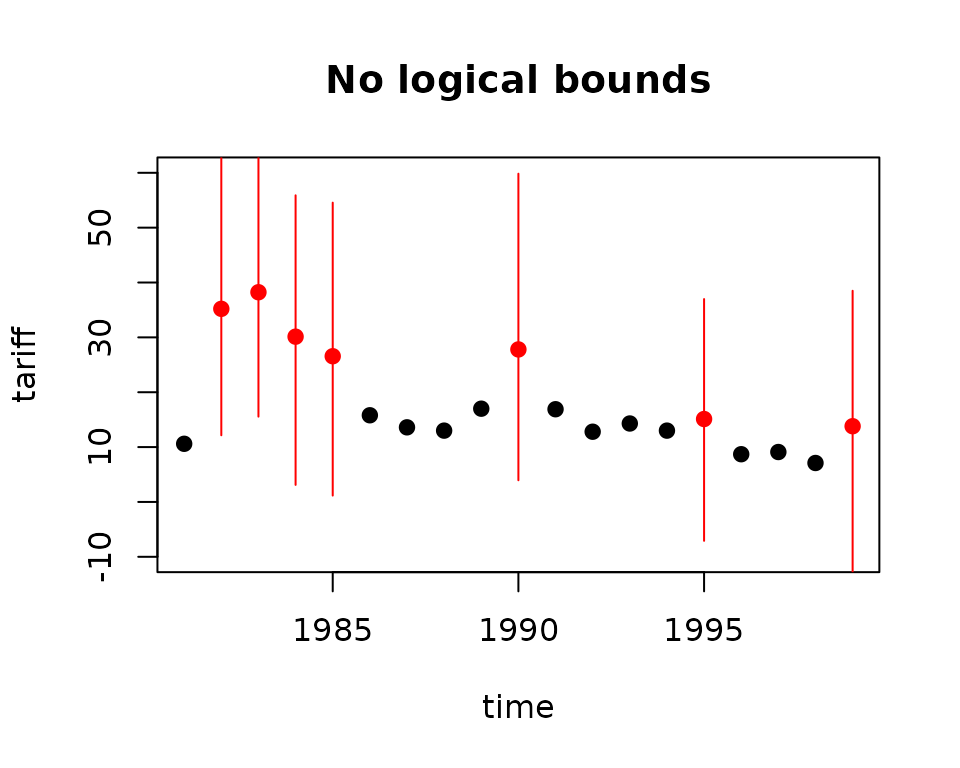
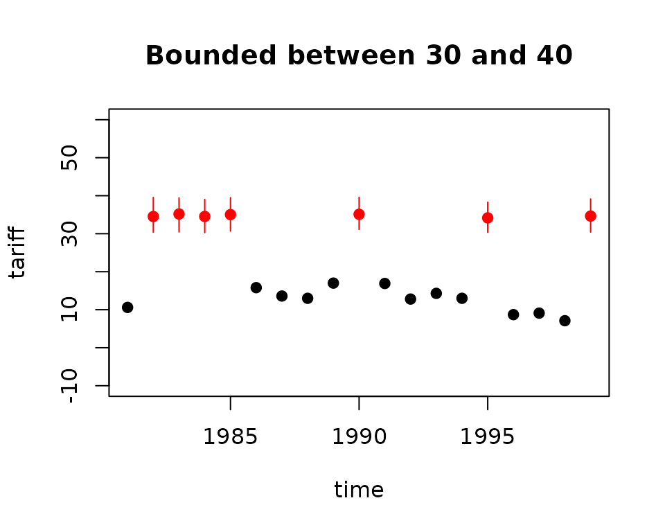

Using Amelia
2024-11-07
using-amelia.RmdData
We now demonstrate how to use Amelia using data from Milner and Kubota (2005) which studies the effect of democracy on trade policy. For the purposes of this user’s guide, we will use a subset restricted to nine developing countries in Asia from 1980 to 19991. This dataset includes 9 variables:
| Variable | Description |
|---|---|
year |
year |
country |
country |
tariff |
average tariff rates |
polity |
Polity IV Score2 |
pop |
total population |
gdp.pc |
gross domestic product per capita |
intresmi |
gross international reserves |
signed |
dummy variable if signed an IMF agreement that year |
fivop |
measure of financial openness |
usheg |
measure of US hegemony3 |
These variables correspond to the variables used in the analysis model of Milner and Kubota (2005) in table 2.
We first load the Amelia and the data:
## Loading required package: Rcpp## ##
## ## Amelia II: Multiple Imputation
## ## (Version 1.8.2, built: 2024-04-10)
## ## Copyright (C) 2005-2024 James Honaker, Gary King and Matthew Blackwell
## ## Refer to http://gking.harvard.edu/amelia/ for more information
## ##
data(freetrade)We can check the summary statistics of the data to see that there is missingness on many of the variables:
summary(freetrade)## year country tariff polity
## Min. :1981 Length:171 Min. : 7.1 Min. :-8.0
## 1st Qu.:1985 Class :character 1st Qu.: 16.3 1st Qu.:-2.0
## Median :1990 Mode :character Median : 25.2 Median : 5.0
## Mean :1990 Mean : 31.6 Mean : 2.9
## 3rd Qu.:1995 3rd Qu.: 40.8 3rd Qu.: 8.0
## Max. :1999 Max. :100.0 Max. : 9.0
## NA's :58 NA's :2
## pop gdp.pc intresmi signed
## Min. :1.41e+07 Min. : 150 Min. :0.904 Min. :0.000
## 1st Qu.:1.97e+07 1st Qu.: 420 1st Qu.:2.223 1st Qu.:0.000
## Median :5.28e+07 Median : 814 Median :3.182 Median :0.000
## Mean :1.50e+08 Mean : 1867 Mean :3.375 Mean :0.155
## 3rd Qu.:1.21e+08 3rd Qu.: 2463 3rd Qu.:4.406 3rd Qu.:0.000
## Max. :9.98e+08 Max. :12086 Max. :7.935 Max. :1.000
## NA's :13 NA's :3
## fiveop usheg
## Min. :12.3 Min. :0.256
## 1st Qu.:12.5 1st Qu.:0.262
## Median :12.6 Median :0.276
## Mean :12.7 Mean :0.276
## 3rd Qu.:13.2 3rd Qu.:0.289
## Max. :13.2 Max. :0.308
## NA's :18In the presence of missing data, most statistical packages use listwise deletion, which removes any row that contains a missing value from the analysis. Using the base model of Milner and Kubota (2005) Table 2, we run a simple linear model in R, which uses listwise deletion:
##
## Call:
## lm(formula = tariff ~ polity + pop + gdp.pc + year + country,
## data = freetrade)
##
## Residuals:
## Min 1Q Median 3Q Max
## -30.764 -3.259 0.087 2.598 18.310
##
## Coefficients:
## Estimate Std. Error t value Pr(>|t|)
## (Intercept) 1.97e+03 4.02e+02 4.91 3.6e-06
## polity -1.37e-01 1.82e-01 -0.75 0.45
## pop -2.02e-07 2.54e-08 -7.95 3.2e-12
## gdp.pc 6.10e-04 7.44e-04 0.82 0.41
## year -8.71e-01 2.08e-01 -4.18 6.4e-05
## countryIndonesia -1.82e+02 1.86e+01 -9.82 3.0e-16
## countryKorea -2.20e+02 2.08e+01 -10.61 < 2e-16
## countryMalaysia -2.25e+02 2.17e+01 -10.34 < 2e-16
## countryNepal -2.16e+02 2.25e+01 -9.63 7.7e-16
## countryPakistan -1.55e+02 1.98e+01 -7.84 5.6e-12
## countryPhilippines -2.04e+02 2.09e+01 -9.77 3.7e-16
## countrySriLanka -2.09e+02 2.21e+01 -9.46 1.8e-15
## countryThailand -1.96e+02 2.10e+01 -9.36 3.0e-15
##
## Residual standard error: 6.22 on 98 degrees of freedom
## (60 observations deleted due to missingness)
## Multiple R-squared: 0.925, Adjusted R-squared: 0.915
## F-statistic: 100 on 12 and 98 DF, p-value: <2e-16Note that 60 of the 171 original observations are deleted due to missingness. These observations, however, are partially observed, and contain valuable information about the relationships between those variables which are present in the partially completed observations. Multiple imputation will help us retrieve that information and make better, more efficient, inferences.
Multiple Imputation
When performing multiple imputation, the first step is to identify the variables to include in the imputation model. It is crucial to include at least as much information as will be used in the analysis model. That is, any variable that will be in the analysis model should also be in the imputation model. This includes any transformations or interactions of variables that will appear in the analysis model.
In fact, it is often useful to add more information to the imputation
model than will be present when the analysis is run. Since imputation is
predictive, any variables that would increase predictive power should be
included in the model, even if including them in the analysis model
would produce bias in estimating a causal effect (such as for
post-treatment variables) or collinearity would preclude determining
which variable had a relationship with the dependent variable (such as
including multiple alternate measures of GDP). In our case, we include
all the variables in freetrade in the imputation model,
even though our analysis model focuses on polity,
pop and gdp.pc. We’re not incorporating time
or spatial data yet, but we do below.
To create multiple imputations in Amelia, we can simply run
a.out <- amelia(freetrade, m = 5, ts = "year", cs = "country")## -- Imputation 1 --
##
## 1 2 3 4 5 6 7 8 9 10 11 12 13 14
##
## -- Imputation 2 --
##
## 1 2 3 4 5 6 7 8 9 10 11 12 13 14
##
## -- Imputation 3 --
##
## 1 2 3 4 5 6 7 8 9 10 11 12 13 14 15 16
##
## -- Imputation 4 --
##
## 1 2 3 4 5 6 7 8 9 10 11 12 13 14 15
##
## -- Imputation 5 --
##
## 1 2 3 4 5 6 7 8 9 10 11 12 13 14 15 16 17 18
a.out##
## Amelia output with 5 imputed datasets.
## Return code: 1
## Message: Normal EM convergence.
##
## Chain Lengths:
## --------------
## Imputation 1: 14
## Imputation 2: 14
## Imputation 3: 16
## Imputation 4: 15
## Imputation 5: 18Note that our example dataset is deliberately small both in variables and in cross-sectional elements. Typical datasets may often have hundreds or possibly a couple thousand steps to the EM algorithm. Long chains should remind the analyst to consider whether transformations of the variables would more closely fit the multivariate normal assumptions of the model (correct but omitted transformations will shorten the number of steps and improve the fit of the imputations), but do not necessarily denote problems with the imputation model.
The output gives some information about how the algorithm ran. Each
of the imputed datasets is now in the list
a.out$imputations. Thus, we could plot a histogram of the
tariff variable from the 3rd imputation,
hist(a.out$imputations[[3]]$tariff, col = "grey", border = "white")
Saving imputed datasets
If you need to save your imputed datasets, one direct method is to
save the output list from amelia,
save(a.out, file = "imputations.RData")As in the previous example, the ith imputed datasets can be retrieved
from this list as a.out$imputations[[i]].
In addition, you can save each of the imputed datasets to its own
file using the write.amelia() command,
write.amelia(obj = a.out, file.stem = "outdata")This will create one comma-separated value file for each imputed dataset in the following manner:
outdata1.csv
outdata2.csv
outdata3.csv
outdata4.csv
outdata5.csvThe write.amelia function can also save files in
tab-delimited and Stata (.dta) file formats. For instance,
to save Stata files, simply change the format argument to
"dta",
write.amelia(obj = a.out, file.stem = "outdata", format = "dta")Additionally, write.amelia() can create a “stacked”
version of the imputed dataset which stacks each imputed dataset on top
of one another. This can be done by setting the argument to
FALSE. The resulting matrix is of size
if the original dataset is excluded (orig.data = FALSE) and
of size
if it is included (orig.data = TRUE). The stacked dataset
will include a variable (set with impvar) that indicates to
which imputed dataset the observation belongs.
Combining multiple calls to amelia()
The EMB algorithm is what computer scientists call embarrassingly parallel, meaning that it is simple to separate each imputation into parallel processes. With Amelia it is simple to run subsets of the imputations on different machines and then combine them after the imputation for use in analysis model. This allows for a huge increase in the speed of the algorithm.
Output lists from different Amelia runs can be combined together into
a new list. For instance, suppose that we wanted to add another ten
imputed datasets to our earlier call to amelia(). First,
run the function to get these additional imputations,
a.out.more <- amelia(freetrade, m = 10, ts = "year", cs = "country", p2s = 0)
a.out.more##
## Amelia output with 10 imputed datasets.
## Return code: 1
## Message: Normal EM convergence.
##
## Chain Lengths:
## --------------
## Imputation 1: 18
## Imputation 2: 16
## Imputation 3: 14
## Imputation 4: 17
## Imputation 5: 12
## Imputation 6: 21
## Imputation 7: 8
## Imputation 8: 14
## Imputation 9: 20
## Imputation 10: 9then combine this output with our original output using the
ameliabind() function,
a.out.more <- ameliabind(a.out, a.out.more)
a.out.more##
## Amelia output with 15 imputed datasets.
## Return code: 1
## Message: Normal EM convergence
##
## Chain Lengths:
## --------------
## Imputation 1: 14
## Imputation 2: 14
## Imputation 3: 16
## Imputation 4: 15
## Imputation 5: 18
## Imputation 6: 18
## Imputation 7: 16
## Imputation 8: 14
## Imputation 9: 17
## Imputation 10: 12
## Imputation 11: 21
## Imputation 12: 8
## Imputation 13: 14
## Imputation 14: 20
## Imputation 15: 9This function binds the two outputs into the same output so that you
can pass the combined imputations easily to analysis models and
diagnostics. Note that a.out.more now has a total of 15
imputations.
A simple way to execute a parallel processing scheme with Amelia
would be to run amelia() with m set to 1 on
different machines or processors, save each output using the
save() function, load them all on the same R session using
load() command and then combine them using
ameliabind(). In order to do this, however, make sure to
name each of the outputs a different name so that they do not overwrite
each other when loading into the same R session. Also, some parallel
environments will dump all generated files into a common directory,
where they may overwrite each other. If it is convenient in a parallel
environment to run a large number of amelia() calls from a
single piece of code, one useful way to avoid overwriting is to create
the file.stem with a random suffix. For example:
b <- round(runif(1, min = 1111, max = 9999))
random.name <- paste("am", b, sep = "")
amelia <- write.amelia(obj = a.out, file.stem = random.name)Screen output
Screen output can be adjusted with the “print to screen” argument,
p2s. At a value of 0, no screen printing will occur. This
may be useful in large jobs or simulations where a very large number of
imputation models may be required. The default value of 1, lists each
bootstrap, and displays the number of iterations required to reach
convergence in that bootstrapped dataset. The value of 2 gives more
thorough screen output, including, at each iteration, the number of
parameters that have significantly changed since the last iteration.
This may be useful when the EM chain length is very long, as it can
provide an intuition for many parameters still need to converge in the
EM chain, and a sense of the time remaining. However, it is worth noting
that the last several parameters can often take a significant fraction
of the total number of iterations to converge. Setting p2s
to 2 will also generate information on how EM algorithm is behaving,
such as a ! when the current estimated complete data
covariance matrix is not invertible and a * when the
likelihood has not monotonically increased in that step. Having many of
these two symbols in the screen output is an indication of a problematic
imputation model. Problems of non-invertible matrices often mean that
current guess for the covariance matrix is singular. This is a sign that
there may be two highly correlated variables in the model. One way to
resolve is to use a ridge prior (see @ref(sec_prior)).
An example of the output when p2s is 2 would be
a.out.p2s <- amelia(freetrade, m = 1, ts = "year", cs = "country", p2s = 2)##
## amelia starting
## beginning prep functions
## Variables used: tariff polity pop gdp.pc intresmi signed fiveop usheg
## running bootstrap
## -- Imputation 1 --
## setting up EM chain indicies
##
## 1(44) 2(33) 3(27) 4(21) 5(22) 6(22) 7(19) 8(18) 9(14) 10(8) 11(6) 12(2) 13(0)
##
## saving and cleaningParallel Imputation
Each imputation in the above EMB algorithm is completely independent
of any other imputation, a property called embarrassingly parallel. This
type of approach can take advantage of the multiple-core infrastructure
of modern CPUs. Each core in a multi-core processor can execute
independent operations in parallel. Amelia can utilize this parallel
processing internally via the parallel and the
ncpus arguments. The parallel argument sets
the parallel processing backend, either with "multicore" or
"snow" (or "no" for no parallel processing).
The "multicore" backend is not available on Windows
systems, but tends to be quicker at parallel processing. On a Windows
system, the "snow" backend provides parallel processing
through a cluster of worker processes across the CPUs. You can set the
default for this argument using the "amelia.parallel"
option. This allows you to run Amelia in parallel as the default for an
entire R session without setting arguments in the amelia()
call.
For each of the parallel backends, Amelia requires a number of CPUs
to use in parallel. This can be set using the ncpus
argument. It can be higher than the number of physical cores in the
system if hyperthreading or other technologies are available. You can
use the parallel::detectCores() function to determine how
many cores are available on your machine. The default for this argument
can be set using the "amelia.ncpus" option.
On Unix-alike systems (such as macOS and Linux distributions), the
"multicore" backend automatically sets up and stops the
parallel workers by forking the process. On Windows, the
"snow" backend requires more attention. Amelia will attempt
to create a parallel cluster of worker processes (since Windows systems
cannot fork a process) and will stop this cluster after the imputations
are complete. Alternatively, Amelia also has a cl argument,
which accepts a predefined cluster made using the
parallel::makePSOCKcluster(). For more information about
parallel processing in R, see the documentation for the
parallel package that ships along with R or the CRAN Task
View on Parallel
Computing with R
Improving Imputations via Transformations
Social science data commonly includes variables that fail to fit to a multivariate normal distribution. Indeed, numerous models have been introduced specifically to deal with the problems they present. As it turns out, much evidence in the literature (discussed in King et al. 2001) indicates that the multivariate normal model used in Amelia usually works well for the imputation stage even when discrete or non-normal variables are included and when the analysis stage involves these limited dependent variable models. Nevertheless, Amelia includes some limited capacity to deal directly with ordinal and nominal variables and to modify variables that require other transformations. In general nominal and log transform variables should be declared to Amelia, whereas ordinal (including dichotomous) variables often need not be, as described below. (For harder cases, see (Schafer 1997), for specialized MCMC-based imputation models for discrete variables.)
Although these transformations are taken internally on these
variables to better fit the data to the multivariate normal assumptions
of the imputation model, all the imputations that are created will be
returned in the original untransformed form of the data. If the user has
already performed transformations on their data (such as by taking a log
or square root prior to feeding the data to amelia()) these
do not need to be declared, as that would result in the transformation
occurring doubly in the imputation model. The fully imputed
data sets that are returned will always be in the form of the original
data that is passed to the amelia() routine.
Ordinal
In much statistical research, researchers treat independent ordinal (including dichotomous) variables as if they were really continuous. If the analysis model to be employed is of this type, then nothing extra is required of the of the imputation model. Users are advised to allow Amelia to impute non-integer values for any missing data, and to use these non-integer values in their analysis. Sometimes this makes sense, and sometimes this defies intuition. One particular imputation of 2.35 for a missing value on a seven point scale carries the intuition that the respondent is between a 2 and a 3 and most probably would have responded 2 had the data been observed. This is easier to accept than an imputation of 0.79 for a dichotomous variable where a zero represents a male and a one represents a female respondent. However, in both cases the non-integer imputations carry more information about the underlying distribution than would be carried if we were to force the imputations to be integers. Thus whenever the analysis model permits, missing ordinal observations should be allowed to take on continuously valued imputations.
In the freetrade data, one such ordinal variable is
polity which ranges from -10 (full autocracy) to 10 (full
democracy). If we tabulate this variable from one of the imputed
datasets,
table(a.out$imputations[[3]]$polity)##
## -8 -7.45783715909671 -7 -6
## 1 1 22 4
## -5 -4 -2 -1
## 7 3 9 1
## 2 3 4 5
## 7 7 15 26
## 6 7 8 9
## 13 5 36 13
## 9.78025479283451
## 1we can see that there is one imputation between -4 and -3 and one imputation between 6 and 7. Again, the interpretation of these values is rather straightforward even if they are not strictly in the coding of the original Polity data.
Often, however, analysis models require some variables to be strictly ordinal, as for example, when the dependent variable will be modeled in a logistical or Poisson regression. Imputations for variables set as ordinal are created by taking the continuously valued imputation and using an appropriately scaled version of this as the probability of success in a binomial distribution. The draw from this binomial distribution is then translated back into one of the ordinal categories.
For our data we can simply add polity to the
ords argument:
a.out1 <- amelia(freetrade, m = 5, ts = "year", cs = "country", ords =
"polity", p2s = 0)
table(a.out1$imputations[[3]]$polity)##
## -8 -7 -6 -5 -4 -2 -1 2 3 4 5 6 7 8 9
## 1 22 4 8 3 9 1 7 7 15 26 13 5 36 14Now, we can see that all of the imputations fall into one of the original polity categories.
Nominal
Nominal variables4 must be treated quite differently than
ordinal variables. Any multinomial variables in the data set (such as
religion coded 1 for Catholic, 2 for Jewish, and 3 for Protestant) must
be specified to Amelia. In our dataset, we have signed
which is 1 if a country signed an IMF agreement in that year and 0 if it
did not. Of course, our first imputation did not limit the imputations
to these two categories
table(a.out1$imputations[[3]]$signed)##
## -0.581727039334061 -0.417310204209806 0 0.914087081006918
## 1 1 142 1
## 1
## 26In order to fix this for a -category multinomial variable, Amelia will determine (as long as your data contain at least one value in each category), and substitute $ p-1$ binary variables to specify each possible category. These new variables will be treated as the other variables in the multivariate normal imputation method chosen, and receive continuous imputations. These continuously valued imputations will then be appropriately scaled into probabilities for each of the possible categories, and one of these categories will be drawn, where upon the original -category multinomial variable will be reconstructed and returned to the user. Thus all imputations will be appropriately multinomial.
For our data we can simply add signed to the
noms argument:
a.out2 <- amelia(freetrade, m = 5, ts = "year", cs = "country",
noms = "signed", p2s = 0)
table(a.out2$imputations[[3]]$signed)##
## 0 1
## 143 28Note that Amelia can only fit imputations into categories that exist in the original data. Thus, if there was a third category of signed, say 2, that corresponded to a different kind of IMF agreement, but it never occurred in the original data, Amelia could not match imputations to it.
Since Amelia properly treats a -category multinomial variable as variables, one should understand the number of parameters that are quickly accumulating if many multinomial variables are being used. If the square of the number of real and constructed variables is large relative to the number of observations, it is useful to use a ridge prior as in section @ref(sec_prior).
Natural log
If one of your variables is heavily skewed or has outliers that may alter the imputation in an unwanted way, you can use a natural logarithm transformation of that variable in order to normalize its distribution. This transformed distribution helps Amelia to avoid imputing values that depend too heavily on outlying data points. Log transformations are common in expenditure and economic variables where we have strong beliefs that the marginal relationship between two variables decreases as we move across the range.
For instance, we can show the tariff variable clearly
has positive (or, right) skew while its natural log transformation has a
roughly normal distribution.
hist(freetrade$tariff, col="grey", border="white")

Identification Variables
Datasets often contain identification variables, such as country
names, respondent numbers, or other identification numbers, codes or
abbreviations. Sometimes these are text and sometimes these are numeric.
Often it is not appropriate to include these variables in the imputation
model, but it is useful to have them remain in the imputed datasets
(However, there are models that would include the ID variables in the
imputation model, such as fixed effects model for data with repeated
observations of the same countries). Identification variables which are
not to be included in the imputation model can be identified with the
argument idvars. These variables will not be used in the
imputation model, but will be kept in the imputed datasets.
If the year and country contained no
information except labels, we could omit them from the imputation:
## -- Imputation 1 --
##
## 1 2 3 4 5 6 7 8 9 10 11 12 13 14 15 16 17 18
##
## -- Imputation 2 --
##
## 1 2 3 4 5 6 7 8 9 10 11 12 13
##
## -- Imputation 3 --
##
## 1 2 3 4 5 6 7 8 9 10 11 12 13 14
##
## -- Imputation 4 --
##
## 1 2 3 4 5 6 7 8 9 10 11 12 13 14 15 16 17
##
## -- Imputation 5 --
##
## 1 2 3 4 5 6 7 8 9 10 11 12 13 14 15##
## Amelia output with 5 imputed datasets.
## Return code: 1
## Message: Normal EM convergence.
##
## Chain Lengths:
## --------------
## Imputation 1: 18
## Imputation 2: 13
## Imputation 3: 14
## Imputation 4: 17
## Imputation 5: 15Note that Amelia will return with an error if your dataset contains a
factor or character variable that is not marked as a nominal or
identification variable. Thus, if we were to omit the factor
country from the cs or idvars
arguments, we would receive an error:
## Amelia Error Code: 38
## The following variable(s) are characters:
## country
## You may have wanted to set this as a ID variable to remove it
## from the imputation model or as an ordinal or nominal
## variable to be imputed. Please set it as either and
## try again.In order to conserve memory, it is wise to remove unnecessary variables from a data set before loading it into Amelia. The only variables you should include in your data when running Amelia are variables you will use in the analysis stage and those variables that will help in the imputation model. While it may be tempting to simply mark unneeded variables as IDs, it only serves to waste memory and slow down the imputation procedure.
Time Series, or Time Series Cross Sectional Data
Many variables that are recorded over time within a cross-sectional unit are observed to vary smoothly over time. In such cases, knowing the observed values of observations close in time to any missing value may enormously aid the imputation of that value. However, the exact pattern may vary over time within any cross-section. There may be periods of growth, stability, or decline; in each of which the observed values would be used in a different fashion to impute missing values. Also, these patterns may vary enormously across different cross-sections, or may exist in some and not others. Amelia can build a general model of patterns within variables across time by creating a sequence of polynomials of the time index. If, for example, tariffs vary smoothly over time, then we make the modeling assumption that there exists some polynomial that describes the economy in cross-sectional unit at time as:
And thus if we include enough higher order terms of time then the pattern between observed values of the tariff rate can be estimated. Amelia will create polynomials of time up to the user defined -th order, ().
We can implement this with the ts and
polytime arguments. If we thought that a second-order
polynomial would help predict we could run
a.out2 <- amelia(freetrade, ts = "year", cs = "country", polytime = 2)With this input, Amelia will add covariates to the model that correspond to time and its polynomials. These covariates will help better predict the missing values.
If cross-sectional units are specified these polynomials can be interacted with the cross-section unit to allow the patterns over time to vary between cross-sectional units. Unless you strongly believe all units have the same patterns over time in all variables (including the same constant term), this is a reasonable setting. When is set to 0, this interaction simply results in a model of fixed effects where every unit has a uniquely estimated constant term. Amelia does not smooth the observed data, and only uses this functional form, or one you choose, with all the other variables in the analysis and the uncertainty of the prediction, to impute the missing values.
In order to impute with trends specific to each cross-sectional unit,
we can set intercs to TRUE:
a.out.time <- amelia(freetrade, ts = "year", cs = "country", polytime = 1,
intercs = TRUE, p2s = 2)Note that attempting to use polytime without the
ts argument, or intercs without the
cs argument will result in an error.
Using the tscsPlot() function (discussed below), we can
see that we have a much better prediction about the missing values when
incorporating time than when we omit it:
tscsPlot(a.out, cs = "Malaysia", main = "Malaysia (no time settings)",
var = "tariff", ylim = c(-10, 60))
tscsPlot(a.out.time, cs = "Malaysia", main = "Malaysia (with time settings)",
var = "tariff", ylim = c(-10, 60))
Lags and leads
An alternative way of handling time-series information is to include lags and leads of certain variables into the imputation model. Lags are variables that take the value of another variable in the previous time period while leads take the value of another variable in the next time period. Many analysis models use lagged variables to deal with issues of endogeneity, thus using leads may seems strange. It is important to remember, however, that imputation models are predictive, not causal. Thus, since both past and future values of a variable are likely correlated with the present value, both lags and leads should improve the model.
If we wanted to include lags and leads of tariffs, for instance, we
would simply pass this to the lags and leads
arguments:
a.out2 <- amelia(freetrade, ts = "year", cs = "country", lags = "tariff",
leads = "tariff")## -- Imputation 1 --
##
## 1 2 3 4 5 6 7 8 9 10 11 12 13 14 15 16 17 18 19
##
## -- Imputation 2 --
##
## 1 2 3 4 5 6 7 8 9 10 11 12 13 14 15 16 17 18 19 20
## 21 22
##
## -- Imputation 3 --
##
## 1 2 3 4 5 6 7 8 9 10 11 12 13 14 15 16 17 18 19 20
## 21 22
##
## -- Imputation 4 --
##
## 1 2 3 4 5 6 7 8 9 10 11 12 13 14 15 16
##
## -- Imputation 5 --
##
## 1 2 3 4 5 6 7 8 9 10 11 12 13 14 15 16 17 18 19 20
## 21 22 23 24Including Prior Information
Amelia has a number of methods of setting priors within the imputation model. Two of these are commonly used and discussed below, ridge priors and observational priors.
Ridge priors for high missingness, Small samples, or large correlations
When the data to be analyzed contain a high degree of missingness or
very strong correlations among the variables, or when the number of
observations is only slightly greater than the number of parameters
(where
is the number of variables), results from your analysis model will be
more dependent on the choice of imputation model. This suggests more
testing in these cases of alternative specifications under Amelia. This
can happen when using the polynomials of time interacted with the cross
section are included in the imputation model. For example, in our data,
if we used a polynomial of degree 2 with unit-specific trends and there
are 9 countries, it would add
more variables to the imputation model (dropping one of the fixed
effects for identification). When these are added, the EM algorithm can
become unstable. You can detect this by inspecting the screen output
under p2s = 2 or by observing that the number iterations
per imputation are very divergent.
In these circumstances, we recommend adding a ridge prior which will
help with numerical stability by shrinking the covariances among the
variables toward zero without changing the means or variances. This can
be done by including the empri argument. Including this
prior as a positive number is roughly equivalent to adding
empri artificial observations to the data set with the same
means and variances as the existing data but with zero covariances.
Thus, increasing the empri setting results in more
shrinkage of the covariances, thus putting more a priori structure on
the estimation problem: like many Bayesian methods, it reduces variance
in return for an increase in bias that one hopes does not overwhelm the
advantages in efficiency. In general, we suggest keeping the value on
this prior relatively small and increase it only when necessary. A
recommendation of 0.5 to 1 percent of the number of observations,
,
is a reasonable starting value, and often useful in large datasets to
add some numerical stability. For example, in a dataset of two thousand
observations, this would translate to a prior value of 10 or 20
respectively. A prior of up to 5 percent is moderate in most
applications and 10 percent is reasonable upper bound.
For our data, it is easy to code up a 1 percent ridge prior:
a.out.time2 <- amelia(freetrade, ts = "year", cs = "country", polytime = 1,
intercs = TRUE, p2s = 0, empri = .01 * nrow(freetrade))
a.out.time2##
## Amelia output with 5 imputed datasets.
## Return code: 1
## Message: Normal EM convergence.
##
## Chain Lengths:
## --------------
## Imputation 1: 17
## Imputation 2: 17
## Imputation 3: 13
## Imputation 4: 19
## Imputation 5: 20Observation-level priors
Researchers often have additional prior information about missing data values based on previous research, academic consensus, or personal experience. Amelia can incorporate this information to produce vastly improved imputations. The Amelia algorithm allows users to include informative Bayesian priors about individual missing data cells instead of the more general model parameters, many of which have little direct meaning.
The incorporation of priors follows basic Bayesian analysis where the imputation turns out to be a weighted average of the model-based imputation and the prior mean, where the weights are functions of the relative strength of the data and prior: when the model predicts very well, the imputation will down-weight the prior, and vice versa (Honaker and King 2010).
The priors about individual observations should describe the analyst’s belief about the distribution of the missing data cell. This can either take the form of a mean and a standard deviation or a confidence interval. For instance, we might know that 1986 tariff rates in Thailand around 40%, but we have some uncertainty as to the exact value. Our prior belief about the distribution of the missing data cell, then, centers on 40 with a standard deviation that reflects the amount of uncertainty we have about our prior belief.
To input priors you must build a priors matrix with either four or five columns. Each row of the matrix represents a prior on either one observation or one variable. In any row, the entry in the first column is the row of the observation and the entry is the second column is the column of the observation. In the four column priors matrix the third and fourth columns are the mean and standard deviation of the prior distribution of the missing value.
For instance, suppose that we had some expert prior information about tariff rates in Thailand. We know from the data that Thailand is missing tariff rates in many years,
freetrade[freetrade$country == "Thailand", c("year", "country", "tariff")]## year country tariff
## 153 1981 Thailand 32.3
## 154 1982 Thailand NA
## 155 1983 Thailand NA
## 156 1984 Thailand NA
## 157 1985 Thailand 41.2
## 158 1986 Thailand NA
## 159 1987 Thailand NA
## 160 1988 Thailand NA
## 161 1989 Thailand 40.8
## 162 1990 Thailand 39.8
## 163 1991 Thailand 37.8
## 164 1992 Thailand NA
## 165 1993 Thailand 45.6
## 166 1994 Thailand 23.3
## 167 1995 Thailand 23.1
## 168 1996 Thailand NA
## 169 1997 Thailand NA
## 170 1998 Thailand 20.1
## 171 1999 Thailand 17.1Suppose that we had expert information that tariff rates were roughly 40% in Thailand between 1986 and 1988 with about a 6% margin of error. This corresponds to a standard deviation of about 3. In order to include this information, we must form the priors matrix:
## [,1] [,2] [,3] [,4]
## [1,] 158 3 40 3
## [2,] 159 3 40 3
## [3,] 160 3 40 3The first column of this matrix corresponds to the row numbers of
Thailand in these three years, the second column refers to the column
number of tariff in the data and the last two columns refer
to the actual prior. Once we have this matrix, we can pass it to
amelia(),
a.out.pr <- amelia(freetrade, ts = "year", cs = "country", priors = pr)## -- Imputation 1 --
##
## 1 2 3 4 5 6 7 8 9 10 11 12 13 14 15 16 17
##
## -- Imputation 2 --
##
## 1 2 3 4 5 6 7 8 9 10 11 12
##
## -- Imputation 3 --
##
## 1 2 3 4 5 6 7 8 9 10 11 12
##
## -- Imputation 4 --
##
## 1 2 3 4 5 6 7 8 9 10 11 12 13 14 15
##
## -- Imputation 5 --
##
## 1 2 3 4 5 6 7 8 9 10 11 12 13 14In the five column matrix, the last three columns describe a confidence range of the data. The columns are a lower bound, an upper bound, and a confidence level between 0 and 1, exclusive. Whichever format you choose, it must be consistent across the entire matrix. We could get roughly the same prior as above by utilizing this method. Our margin of error implies that we would want imputations between 34 and 46, so our matrix would be
pr.2 <- matrix(
c(158, 159, 160, 3, 3, 3, 34, 34, 34, 46, 46, 46, 0.95, 0.95, 0.95),
nrow = 3, ncol = 5
)
pr.2## [,1] [,2] [,3] [,4] [,5]
## [1,] 158 3 34 46 0.95
## [2,] 159 3 34 46 0.95
## [3,] 160 3 34 46 0.95These priors indicate that we are 95% confident that these missing values are in the range 34 to 46.
If a prior has the value 0 in the first column, this prior will be
applied to all missing values in this variable, except for explicitly
set priors. Thus, we could set a prior for the entire
tariff variable of 20, but still keep the above specific
priors with the following code:
pr.3 <- matrix(
c(158, 159, 160, 0, 3, 3 , 3, 3, 40, 40, 40, 20, 3, 3, 3, 5),
nrow = 4, ncol = 4)
pr.3## [,1] [,2] [,3] [,4]
## [1,] 158 3 40 3
## [2,] 159 3 40 3
## [3,] 160 3 40 3
## [4,] 0 3 20 5Logical bounds
In some cases, variables in the social sciences have known logical bounds. Proportions must be between 0 and 1 and duration data must be greater than 0, for instance. Many of these logical bounds can be handled by using the correct transformation for that type of variable (see @ref(sec:trans) for more details on the transformations handled by Amelia). In the occasional case that imputations must satisfy certain logical bounds not handled by these transformations, Amelia can take draws from a truncated normal distribution in order to achieve imputations that satisfy the bounds. Note, however, that this procedure imposes extremely strong restrictions on the imputations and can lead to lower variances than the imputation model implies. The mean value across all the imputed values of a missing cell is the best guess from the imputation model of that missing value. The variance of the distribution across imputed datasets correctly reflects the uncertainty in that imputation. It is often the mean imputed value that should conform to the any known bounds, even if individual imputations are drawn beyond those bounds. The mean imputed value can be checked with the diagnostics presented in the next section. In general, building a more predictive imputation model will lead to better imputations than imposing bounds.
Amelia implements these bounds by rejection sampling. When drawing
the imputations from their posterior, we repeatedly resample until we
have a draw that satisfies all of the logical constraints. You can set
an upper limit on the number of times to resample with the
max.resample arguments. Thus, if after
max.resample draws, the imputations are still outside the
bounds, Amelia will set the imputation at the edge of the bounds. Thus,
if the bounds were 0 and 100 and all of the draws were negative, Amelia
would simply impute 0.
As an extreme example, suppose that we know, for certain that tariff
rates had to fall between 30 and 40. This, obviously, is not true, but
we can generate imputations from this model. In order to specify these
bounds, we need to generate a matrix of bounds to pass to the
bounds argument. This matrix will have 3 columns: the first
is the column for the bounded variable, the second is the lower bound
and the third is the upper bound. Thus, to implement our bound on tariff
rates (the 3rd column of the dataset), we would create the matrix,
## [,1] [,2] [,3]
## [1,] 3 30 40which we can pass to the bounds argument to
amelia():
a.out.bds <- amelia(freetrade, ts = "year", cs = "country", bounds = bds,
max.resample = 1000)## -- Imputation 1 --
##
## 1 2 3 4 5 6 7 8 9 10 11 12 13 14 15 16 17 18
##
## -- Imputation 2 --
##
## 1 2 3 4 5 6 7 8 9 10 11 12 13 14 15 16
##
## -- Imputation 3 --
##
## 1 2 3 4 5 6 7 8 9 10 11 12
##
## -- Imputation 4 --
##
## 1 2 3 4 5 6 7 8 9 10 11 12 13
##
## -- Imputation 5 --
##
## 1 2 3 4 5 6 7 8 9 10The difference in results between the bounded and unbounded model are not obvious from the output, but inspection of the imputed tariff rates for Malaysia shows that there has been a drastic restriction of the imputations to the desired range:

tscsPlot(a.out.bds, cs = "Malaysia", main = "Bounded between 30 and 40",
var = "tariff", ylim = c(-10, 60))
Again, analysts should be extremely cautious when using these bounds as they can seriously affect the inferences from the imputation model, as shown in this example. Even when logical bounds exist, we recommend simply imputing variables normally, as the violation of the logical bounds represents part of the true uncertainty of imputation.
Post-imputations Transformations
In many cases, it is useful to create transformations of the imputed
variables for use in further analysis. For instance, one may want to
create an interaction between two variables or perform a
log-transformation on the imputed data. To do this, Amelia includes a
transform() function for amelia() output that
adds or overwrites variables in each of the imputed datasets. For
instance, if we wanted to create a log-transformation of the
gdp.pc variable, we could use the following command:
a.out <- transform(a.out, lgdp = log(gdp.pc))
head(a.out$imputations[[1]][,c("country", "year","gdp.pc", "lgdp")])## country year gdp.pc lgdp
## 1 SriLanka 1981 461.0 6.133
## 2 SriLanka 1982 473.8 6.161
## 3 SriLanka 1983 489.2 6.193
## 4 SriLanka 1984 508.2 6.231
## 5 SriLanka 1985 525.6 6.264
## 6 SriLanka 1986 538.9 6.290To create an interaction between two variables, we could simply use:
a.out <- transform(a.out, pol_gdp = polity * gdp.pc)Each transformation is recorded and the summary()
command prints out each transformation that has been performed:
summary(a.out)##
## Amelia output with 5 imputed datasets.
## Return code: 1
## Message: Normal EM convergence.
##
## Chain Lengths:
## --------------
## Imputation 1: 14
## Imputation 2: 14
## Imputation 3: 16
## Imputation 4: 15
## Imputation 5: 18
##
## Rows after Listwise Deletion: 96
## Rows after Imputation: 171
## Patterns of missingness in the data: 8
##
## Fraction Missing for original variables:
## -----------------------------------------
##
## Fraction Missing
## year 0.00000
## country 0.00000
## tariff 0.33918
## polity 0.01170
## pop 0.00000
## gdp.pc 0.00000
## intresmi 0.07602
## signed 0.01754
## fiveop 0.10526
## usheg 0.00000
## lgdp 0.00000
## pol_gdp 0.01170
##
## Post-imputation transformed variables:
## -----------------------------------------
##
## Transformations
## lgdp = log(gdp.pc)
## pol_gdp = polity * gdp.pcNote the updated output is almost exactly the same as the fresh
amelia() output. You can pass the transformed output back
to amelia() and it will add imputations and update these
imputations with the transformations you have performed.
Analysis Models
Imputation is most often a data processing step as opposed to a final
model in of itself. To this end, it is easy to pass output from
amelia() to other functions. The easiest and most
integrated way to run an analysis model is to use the
with() and mi.combine() functions. For
example, in Milner and Kubota (2005), the dependent variable was tariff
rates. We can replicate table 5.1 from their analysis with the original
data simply by running
orig.model <- lm(tariff ~ polity + pop + gdp.pc + year + country, data = freetrade)
orig.model##
## Call:
## lm(formula = tariff ~ polity + pop + gdp.pc + year + country,
## data = freetrade)
##
## Coefficients:
## (Intercept) polity pop gdp.pc
## 1.97e+03 -1.37e-01 -2.02e-07 6.10e-04
## year countryIndonesia countryKorea countryMalaysia
## -8.71e-01 -1.82e+02 -2.20e+02 -2.25e+02
## countryNepal countryPakistan countryPhilippines countrySriLanka
## -2.16e+02 -1.55e+02 -2.04e+02 -2.09e+02
## countryThailand
## -1.96e+02Running the same model with imputed data is almost identical. We can
run the lm within each imputed data set by using the
with() function:
## [[1]]
##
## Call:
## lm(formula = tariff ~ polity + pop + gdp.pc + year + country)
##
## Coefficients:
## (Intercept) polity pop gdp.pc
## 2.44e+03 3.54e-01 -7.78e-08 -2.41e-04
## year countryIndonesia countryKorea countryMalaysia
## -1.17e+00 -7.97e+01 -9.96e+01 -1.00e+02
## countryNepal countryPakistan countryPhilippines countrySriLanka
## -9.41e+01 -5.53e+01 -9.26e+01 -9.38e+01
## countryThailand
## -8.69e+01
##
##
## [[2]]
##
## Call:
## lm(formula = tariff ~ polity + pop + gdp.pc + year + country)
##
## Coefficients:
## (Intercept) polity pop gdp.pc
## 2.43e+03 -1.66e-02 -1.40e-07 1.23e-03
## year countryIndonesia countryKorea countryMalaysia
## -1.13e+00 -1.28e+02 -1.72e+02 -1.67e+02
## countryNepal countryPakistan countryPhilippines countrySriLanka
## -1.54e+02 -1.08e+02 -1.51e+02 -1.55e+02
## countryThailand
## -1.49e+02The result here is simply a list of output of lm()
applied to each imputed data set. We can combine the imputed estimates
using the rules described in King et al. (2001) and Schafer (1997) with
the mi.combine() function:
out <- mi.combine(imp.models, conf.int = TRUE)
out## # A tibble: 13 × 10
## term estimate std.error statistic p.value df r miss.info conf.low
## <chr> <dbl> <dbl> <dbl> <dbl> <dbl> <dbl> <dbl> <dbl>
## 1 (Interce… 2.72e+3 6.33e+2 4.31 2.21e-4 25.2 0.662 0.441 4.03e+3
## 2 polity 1.61e-1 3.29e-1 0.488 6.29e-1 36.9 0.491 0.363 8.28e-1
## 3 pop -9.80e-8 5.30e-8 -1.85 1.91e+0 12.0 1.37 0.634 1.74e-8
## 4 gdp.pc 2.20e-4 1.35e-3 0.163 8.71e-1 35.8 0.502 0.368 2.96e-3
## 5 year -1.30e+0 3.33e-1 -3.89 2.00e+0 23.3 0.708 0.459 -6.09e-1
## 6 countryI… -9.72e+1 3.97e+1 -2.45 1.97e+0 10.1 1.70 0.686 -8.75e+0
## 7 countryK… -1.25e+2 4.82e+1 -2.59 1.97e+0 8.93 2.02 0.725 -1.54e+1
## 8 countryM… -1.25e+2 4.73e+1 -2.64 1.97e+0 9.85 1.76 0.694 -1.92e+1
## 9 countryN… -1.17e+2 4.67e+1 -2.50 1.97e+0 10.8 1.56 0.666 -1.36e+1
## 10 countryP… -7.34e+1 4.27e+1 -1.72 1.88e+0 10.1 1.69 0.685 2.15e+1
## 11 countryP… -1.13e+2 4.52e+1 -2.51 1.97e+0 10.0 1.72 0.689 -1.27e+1
## 12 countryS… -1.15e+2 4.75e+1 -2.41 1.96e+0 10.1 1.69 0.685 -8.80e+0
## 13 countryT… -1.08e+2 4.57e+1 -2.36 1.96e+0 9.74 1.79 0.697 -5.66e+0
## # ℹ 1 more variable: conf.high <dbl>The combination of the results depends on the broom package and results can be
combined if a tidy() method exists for the estimation
function passed to with(). Other packages such as Zelig can also
combine imputed data sets across a number of statistical models.
Furthermore, users can easily export their imputations using the
write.amelia() function as described in @ref(sec_saving)
and use statistical packages other than R for the analysis model.
In addition to the resources available in R, users can draw on Stata
to implement their analysis models. As of version 11, Stata has built-in
handling of multiply imputed datasets. In order to utilize this
functionality, simply export the “stacked” imputations using the
write.amelia() function:
write.amelia(a.out, separate = FALSE, file.stem = "outdata", format = "dta")Once this stacked dataset is open in Stata, you must tell Stata that it is an imputed dataset using the command:
The command takes a few options: m designates the
imputation variable (set with impvar in
write.amelia()), id sets the identifying
varibles, and imp sets the variables that were imputed (or
included in the imputation). The tariff-usheg indicates
that Stata should treat the range of variables between
tariff and usheg as imputed. Once we have set
the dataset as imputed, we can use the built-in mi commands
to analyze the data:
Multiple-imputation estimates Imputations = 5
Linear regression Number of obs = 171
Average RVI = 1.4114
Complete DF = 167
DF adjustment: Small sample DF: min = 10.36
avg = 18.81
max = 37.62
Model F test: Equal FMI F( 2, 10.4) = 15.50
Within VCE type: OLS Prob > F = 0.0008
------------------------------------------------------------------------------
tariff | Coef. Std. Err. t P>|t| [95% Conf. Interval]
-------------+----------------------------------------------------------------
polity | -.2058115 .3911049 -0.53 0.610 -1.072968 .6613452
pop | 3.21e-08 8.72e-09 3.68 0.004 1.27e-08 5.14e-08
gdp_pc | -.0027561 .000644 -4.28 0.000 -.0040602 -.0014519
_cons | 32.70461 2.660091 12.29 0.000 27.08917 38.32005
------------------------------------------------------------------------------The amelia class
The output from the amelia() function is an instance of
the S3 class amelia. Instances of the amelia
class contain much more than simply the imputed datasets. The
mu object of the class contains the posterior draws of the
means of the complete data. The covMatrices contains the
posterior draws of the covariance matrices of the complete data. Note
that these correspond to the variables as they are sent to the EM
algorithm. Namely, they refer to the variables after being transformed,
centered and scaled.
The iterHist object is a list of m 3-column
matrices. Each row of the matrices corresponds to an iteration of the EM
algorithm. The first column indicates how many parameters had yet to
converge at that iteration. The second column indicates if the EM
algorithm made a step that decreased the number of converged parameters.
The third column indicates whether the covariance matrix at this
iteration was singular. Clearly, the last two columns are meant to
indicate when the EM algorithm enters a problematic part of the
parameter space.
References
We have artificially addedsome missingness to these data for presentational purposes. You can access the original data at https://hvmilner.scholar.princeton.edu/data.↩︎
The Polity score is a number between -10 and 10 indicating how democratic a country is. A fully autocratic country would be a -10 while a fully democratic country would be 1 10.↩︎
This measure of US hegemony is the US imports and exports as a percent of the world total imports and exports.↩︎
Dichotomous (two category) variables are a special case of nominal variables. For these variables, the nominal and ordinal methods of transformation in Amelia agree.↩︎